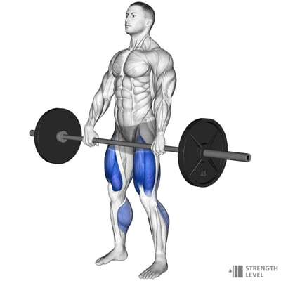
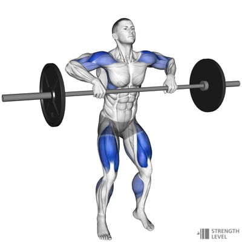
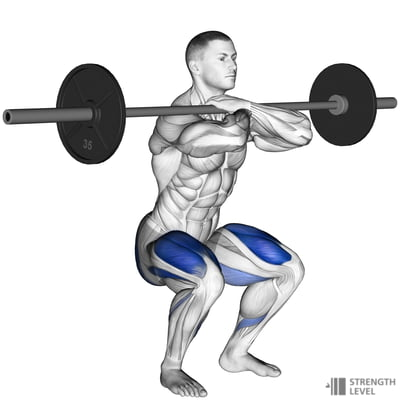
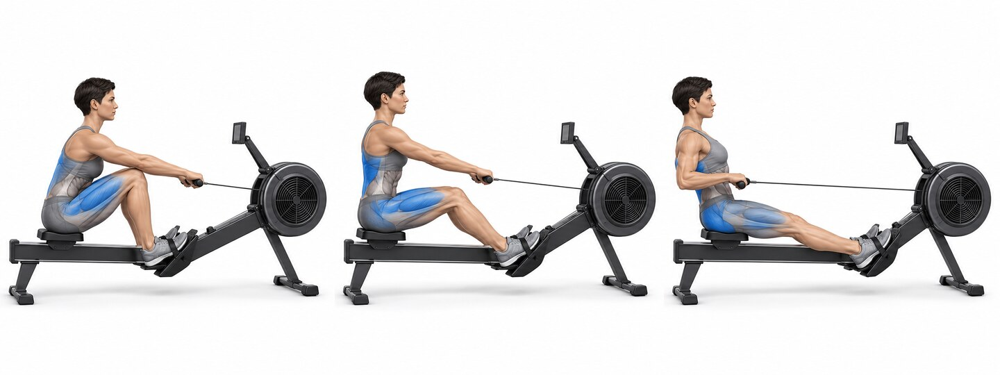
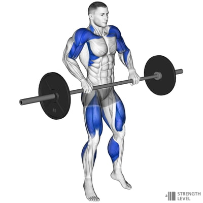
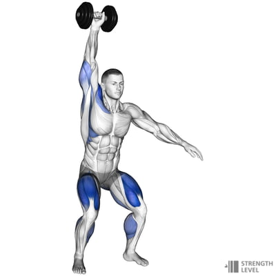
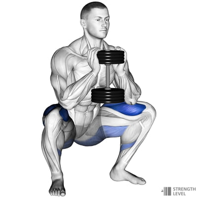

SESSION 6 OF 6 · MEDIUM INTENSITY
Full-Gym Sixes
Exactly 60 minutes · all available equipment
60 minutes6–7 effort / 104 phases
Two relaxed rounds
- 1 min easy row
- 30 rope singles
- 8 kettlebell deadlifts
- 6 dumbbell push presses
- 8 alternating box step-ups
- 6 empty-bar front squats
10:00–20:00 · REHEARSAL
10 minFive easy rounds
4Empty-bar deadliftsDiagram

4Hang power cleansDiagram

4Front squatsDiagram

4Box step-upsDiagram

20Rope singles
This is movement practice, not a race. Add a little barbell load only after every rep feels consistent.
20:00–50:00 · CONDITIONING
E6MOM × 5Six-minute intervals
1200 m row3 positions

26 light barbell power cleansDiagram

38 alternating dumbbell snatchesDiagram

410 kettlebell goblet squatsDiagram

512 alternating box step-upsDiagram
630 rope singles
Start a new round every six minutes and rest after the rope. Target 60–90 seconds of rest; reduce reps before rushing transitions.
Full-body reset
- 2 min very easy row
- 1 min calf stretch per side
- 1 min hip-flexor stretch per side
- 1 min front-rack stretch per side
- 2 min slow breathing
Scaling and safety
Keep the power cleans light and technically crisp. If you are not confident receiving the bar, use hang muscle cleans or double-dumbbell hang cleans instead.
All six 60-minute sessions
Exercise diagrams: Strength Level.
Stop for sharp pain, dizziness, or unusual shortness of breath.
↑ Back to top